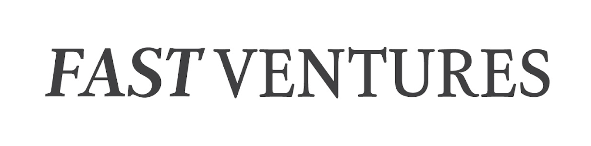
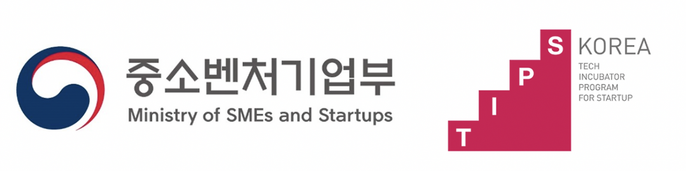
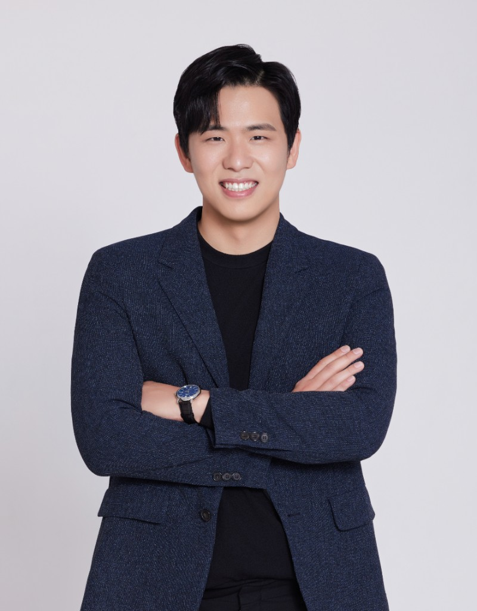
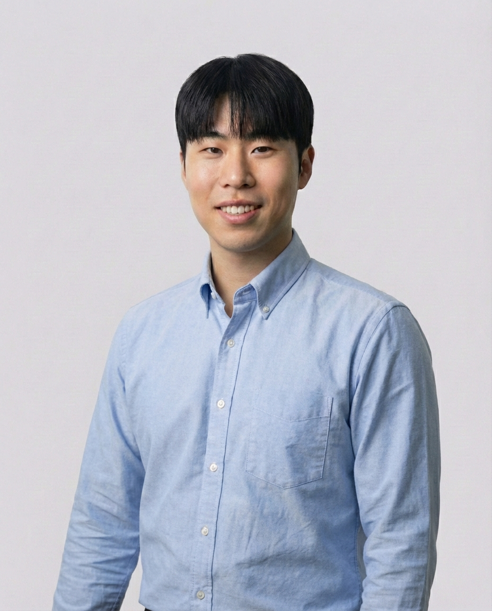

함께 도전하고, 성장하는 팀
Proby에서 인사이트의 기준을 바꿉니다.
다양한 시각과 경험이 모여, AI 정성 리서치의 새로운 기준을 만듭니다. Proby 팀에서 미래를 함께 그려보세요.
인사이트를 민주화하기 위해
유저 보이스를 의사결정의 중심에 둡니다.
Proby는 소비자·유저의 목소리를 제대로 듣고, 그걸 의사결정에 쓰기 쉽게 만드는 AI 정성 리서치 플랫폼을 만듭니다. “조사는 하고 싶은데 리소스가 없다”, “인터뷰가 막막하고 시간이 많이 든다”는 벽을 낮추고, 한국·아시아 리서처와 기업이 저비용·고품질·글로벌 정성 조사를 할 수 있도록 제품을 만들고 있습니다.
AI가 1:1 인터뷰를 진행하고, 응답에 따라 후속 질문을 이어가며 영상·녹취·요약까지 준실시간으로 만듭니다. 단순 설문이 아니라 “왜?”를 묻고 인사이트를 끌어내는 디지털 리서처로서, 고객별 유저 보이스 데이터 레이크와 에이전트 연동으로 의사결정 OS의 일부가 되는 것을 목표로 합니다.
비전과 시장
압도적 ROI로 검증되는 방향으로 나아갑니다.
동일한 개념의 AI 리서치 플랫폼이 미국에서 누적 투자 1,000억 원, 기업가치 5,000억 원 수준에 도달했고, 포춘 500대와 주요 리서치 기관이 이미 도입해 운영 중입니다. Proby는 한국·아시아 리서처의 접근성을 충족하며, 유니콘·에이전시·대기업과 함께 성장하고 있습니다.
우리를 믿어주는 서포터들
주요 투자자들로부터 이미 인정을 받았습니다.
-  패스트벤처스 — 2022년 8월, 아이디어 및 시장 검증을 위한 시드 투자 1.2억 원 조달
-  중소벤처기업부 TIPS — 2024년 8월, 제품 고도화를 위한 TIPS 지원금 5억 원 조달
팀 미션과 목표에 모두가 몰입하기 위해
목표 달성에 최적화된 환경을 고민합니다.
Proby는 전략·콘텐츠·세일즈·제품·유저인사이트·경영지원 등 기능별로 팀을 나누어 움직입니다. 각 팀이 전략과 제품 방향에 맞춰 협업하고, 빠른 의사결정과 고객 문제 해결에 집중합니다.
최고의 동료들과 협업을 만듭니다.
각 분야의 전문가들이 모여 신뢰와 협력, 솔직한 피드백을 바탕으로 모두가 주도적으로 문제를 해결하고 성장하는 환경을 추구합니다. 팀 미션과 목표에 맞춰 각자의 재능이 하나로 뭉치는 몰입을 만듭니다.
고객의 문제 해결에 집중합니다.
Proby는 고객의 문제를 끝까지 해결하기 위해 제품, 기술, 사람 등 가능한 모든 수단을 아우릅니다. AI와 데이터 기반 혁신을 통해, 단순한 도구가 아닌 “문제를 함께 푸는 동료”로서의 플랫폼을 지향합니다.
Proby 구성원
소수정예 최고의 전문가들로 임팩트를 만듭니다.
-

김유빈
CEO
- Yale University, 경제학
- Hive AI(미국 실리콘밸리) Product Analyst
- 크라우드웍스(국내 대표 AI 데이터 플랫폼) Product Manager
- 8년차 연쇄 창업가
-

이철희
CBO
- UC Berkeley 정치외교학과
- 시장조사업 경력 10년 이상
- 구글/메타/삼성전자/LG전자 등 프로젝트 다수
- 콴다 리서치 팀장 경력
-

진현우
CTO
- 프론트, 백엔드 등 다양한 서비스를 직접 개발하고 운영해본 경험 다수
- 소프트웨어 개발자 3년차
-
김보규
AI Engineer
- AI 개발자 5년차
-
전현경
Senior PM
- 입소스/엠브레인/신세계 등 UX 리서처 6년차
-
강조원
Senior PM
- 카이스트 석사
- 한국리서치/리디 등 UX 리서처 2년차
구성원 중심의 경험을 위해
몰입할 수 있는 환경을 제공합니다.
성장에 필요한 도서와 학습을 지원하고, 유연한 근무 환경을 지향합니다. 필요한 경우 재택·시차 출퇴근을 활용할 수 있으며, 구성원이 주도적으로 일할 수 있는 문화를 만듭니다.
생활 속 편의를 지원합니다.
- 점심·저녁 식사 및 교통비 지원
- 경조사비 지원
- 각종 복지 제도 운영
휴식과 건강을 책임집니다.
- 4대보험 및 단체보험
- 정기 건강검진
- 연차 및 리프레시 휴가